Ejercicio 3 -
Reorganización del sistema en dos tiers
El escenario que plantea este Ejercicio es el siguiente: una vez
instalado el servidor de osCommerce en el sistema de desarrollo, las
pruebas preliminares realizadas en él han mostrado que
cargar sobre un único servidor las dos tiendas virtuales y
sus bases de datos asociadas está proporcionando un
rendimiento subóptimo; adicionalmente, el tener el motor de
base de datos en un servidor expuesto directamente a Internet complica
su configuración y gestión, por los riesgos de
seguridad asociados.
Por ello se va a proceder a desacoplar en dos tiers (es decir, en dos
servidores físicos) las aplicaciones, dejando en el servidor
debiantomato
los servidores Apache con los front-ends HTTP y lógicas de
negocio PHP de las tiendas virtuales, y pasando a un segundo servidor
Debian (que llamaremos debiansql)
el motor de MySQL y las bases de datos de TomatoCart y de osCommerce.
Para realizar esta reconfiguración del sistema, deberemos
seguir estos pasos:
1) En el
directorio D:\practicas\MV,
crear un subdirectorio que llamaremos debiansql
2) Abrir en
VMware Workstation la máquina virtual debiantomato (sin
arrancarla). Usando el menú Manage -> Clone,
y utilizando el procedimiento de clonado completo visto en la primera
parte del Ejercicio 1, Práctica 3, crear una
máquina virtual llamada debiansql,
alojada en el directorio D:\practicas\MV\debiansql,
y que será un full-clone de la instantánea Sin Tomatocart de la
máquina debiantomato.
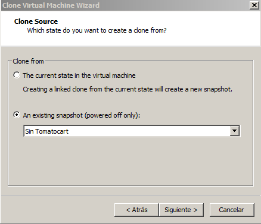
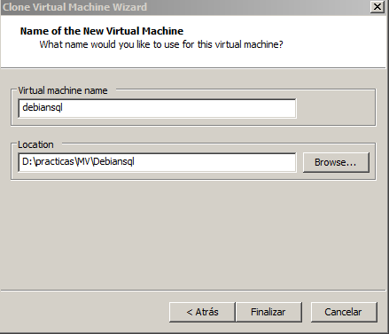
Esta instantánea lleva ya instalado MySQL, PHP5 y
phpMyAdmin, por lo que ahora sólo necesitaremos cambiar su
identidad y su dirección IP.
IMPORTANTE:
Es imprescindible, para los pasos siguientes, asegurarse de que debiantomato
esté apagada. Al ser debiansql
un clon de debiantomato
replica también su configuración de red, por lo
que debiansql
adoptará, al arrancar, la identidad de debiantomato (su
misma dirección IP y hostname), lo que provocaría
un conflicto si debiantomato
estuviera también funcionando en ese momento.
3) Arrancar debiansql y hacer
en ella login como root.
Ir al directorio /etc/network,
y editar el fichero interfaces
para configurarlo con la IP estática 10.0.0.22.
Igualmente, editar /etc/hostaname
para cambiar su nombre de host a debiansql.
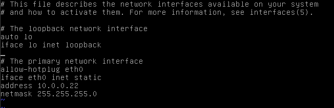
4) Editar el
fichero /etc/hosts
para añadir una línea que resuelva la
dirección
IP para el nombre debiansql.
Observar que mantenemos la línea que resuelve debiantomato, para
permitir que puea ser accedida por red usando su nombre.
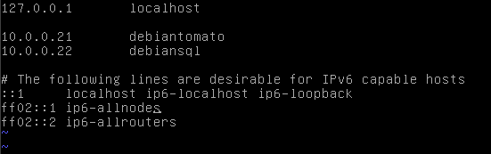
5) Reiniciar
la máquina, ejecutando reboot.
Una vez reiniciada hacer login como root, comprobando que la
máquina adopte el hostname de debiansql.
Comprobar con ifconfig
que su dirección IP es, en efecto, 10.0.0.22.
6) Arrancar
ahora debiantomato.
Hacer login como root, y editar su fichero /etc/hosts para
añadir una línea que resuelva la
dirección IP de debiansql.
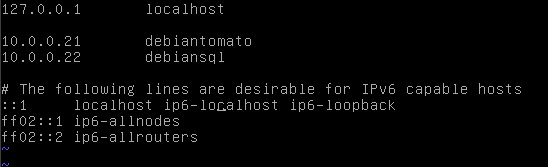
7)
Comprobamos que ambos servidores se vean correctament por la red: en debiantomato,
ejecutar ping debiansql;
en debiansql,
ejecutar ping
debiantomato. En ambos casos deberemos obtener respuesta
al ping.
8)
Comprobamos ahora que funcionan el servidor MySQL y Apache de debiansql, y su
herramienta phpMyAdmin. Desde el Firefox del Windows 7 accedemos a http://10.0.0.22/phpmyadmin
,y, usando Inglés como idioma, hacer login como usuario root. Una vez
comprobado que se accede correctamente, hacer logoug de phpMyAdmin.
Para poder desacoplar el sistema de comercio virtual ya montado en debiantomato
debemos copiar al motor MySQL de debiansql
las bases de datos tomatobase
y oscommercebase.
Vamos a hacerlo usando las funciones para importación y
exportación de bases de datos de phpMyAdmin.
9) En el
Firefox de Windows 7 acceder a http://10.0.0.21/phpmyadmin,
y hacer login como root.
Pulsar sobre tomatobase
(en la barra de la izquierda o a través de la
página de Databases).
10) Una vez
abierta la página con la estructura de tomatobase, pulsar
sobre el botón Export
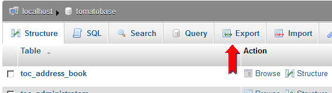
11) Dejar
seleccionada la opción Quick
y pulsar Go.
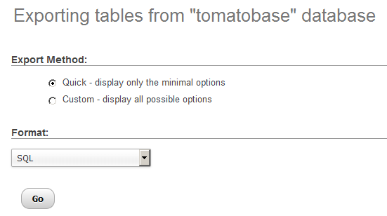
12) Se
abrirá una ventana Abriendo
tomatobase.sql. Pulsar Aceptar.
Esto nos permitirá elegir el directorio de destino del
fichero. Guardarlo como D:\practicas\MV\tomatobase.sql
13) Repetir
el proceso con oscommercebase.
Guardar el fichero de exportación como D:\practicas\MV\oscommercebase.sql
14) Hacer
logout de phpMyAdmin.
(NOTA: Obviamente, en servidores en producción este
procedimiento de exportación debe hacerse con el sistema de
comercio detenido, para evitar actividad posterior a la
exportación del fichero sql, lo que crearía una
incoherencia entre el estado real del sistema y el estado exportado).
Si miramos con Notepad++ (sin modificarlo) el contenido de estos
ficheros .sql veremos que contienen tanto el código SQL como
los datos necesarios para replicar el contenido de las respectivas
bases de datos.
15) Ahora
hacemos login en el phpMyAdmin de debiansql,
accediendo a http://10.0.0.22/phpmyadmin,
y haciendo login como usuario root
Antes de poder importarlas, necesitamos crear las bases de datos y sus
usuarios. Emplearemos para ello el procedimiento descrito en los puntos
41 a 45 del Ejercicio 1, y en el punto 6 del Ejercicio 2, pero con una diferencia
importante: debemos ahora permitir que los usuarios tomatouser y oscommerceuser
puedan conectarse no sólo desde localhost, sino
también desde el servidor remoto 10.0.0.21 (debiantomato).
Para ello, necesitaremos en la administración de MySQL
crear, para cada una de las dos bases de datos, dos usuarios distintos:
usuario@localhost
para permitir conexiones desde el propio servidor debiansql.
usuario@10.0.0.21
para permitir acceos remotos a la base de datos desde el servidor debiantomato
16) En la
página de Databases
de phpMyAdmin crear las bases de datos tomatobase y oscommercebase. No
crear todavía ningún usuario, en ninguna de las
dos.
17) Usando
el procedimiento de los puntos 41 a 45, Ejercicio 1, crear dos
usuarios tomatouser
asociados a la base tomatobase,
empleand para ellos, respectivamente, las configuraciones mostradas en
las figuras.
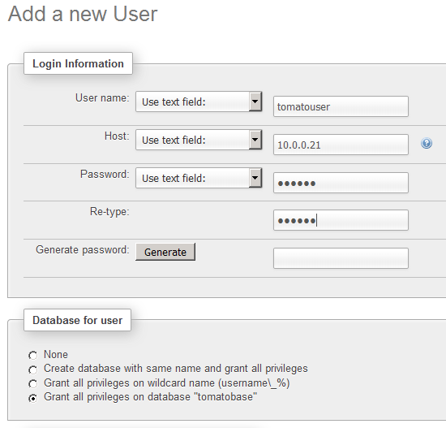
18) Repetir
el procedimiento para el usuario oscommerceuser
de la base oscommercebase.
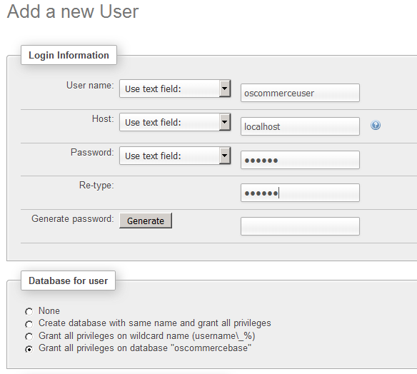
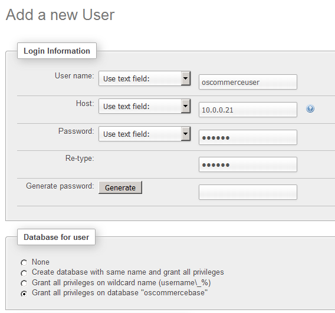
Ahora importaremos las dos bases de datos, usando para ello los
ficheros .sql que exportamos previamente desde debiantomato al
disco del Windows 7.
19)
Seleccionar la base tomatobase.
En la ventana que muestra su estructura aparecerá un
mensaje, diciendo que no existe. Pulsar el botón Import, y luego el
botón Examinar.
Seleccionar el fichero D:\practicas\MV\tomatobase.sql,
y pulsar Go.
obtendremos un mensaje de importación con éxito.
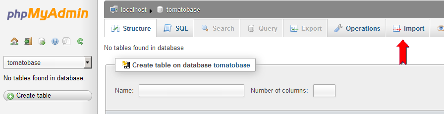
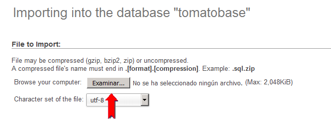
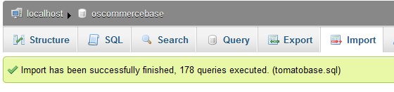
20) Repetir la operación, siguiendo el mismo procedimiento, para la base oscommercebase, usando el fichero D:\practicas\MV\oscommercebase.sql
21) Hacer logout de phpMyAdmin.
Al final de esta última importación tenemos en debiansql una réplica de las bases tomatobase y oscommercebase, cada una de las cuales puede ser accedida y administrada por su respectivo usuario (tomatouser o oscommerceuser), con permisos para conectarse desde el propio debiansql (localhost) o desde debiantomato (10.0.0.21).
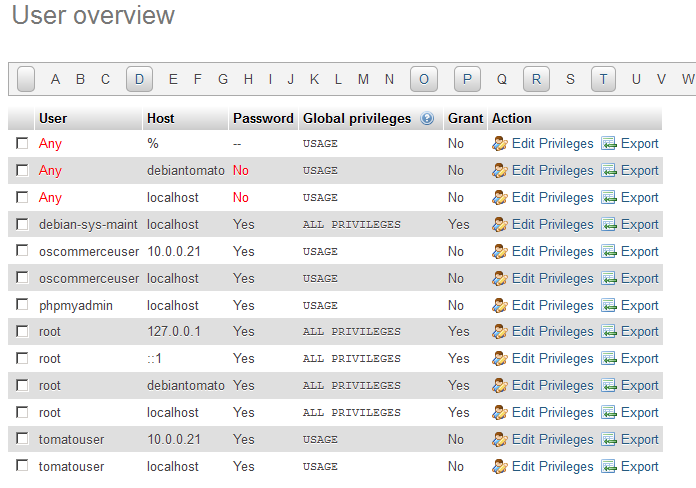
Sin embargo, antes de poder acceder desde debiantomato
debemos activar en el motor MySQL la posibilidad de conexiones remotas,
ya que por defecto (para mayor seguridad) la configuración
inicial de MySQL sólo permite conexiones procedentes de
localhost (127.0.0.1).
22) Podemos comprobar que debiansql, por defecto, sólo permite conexiones a MySQL desde localhost. Para ello, ejecutar netstat -anp | more ;en la salida del comando comprobaremos que el proceso mysql está escuchando en el puerto 3306 (su puerto por defecto), pero sólo en la dirección IP 127.0.0.1
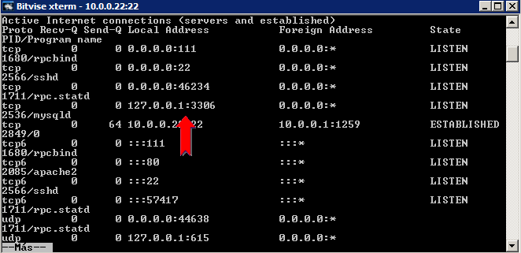
23) Para cambiar esta configuración debemos editar el fichero /etc/mysql/my.cnf, y modificar la línea bind-address para que acepte conexiones a través de la dirección IP 10.0.0.22
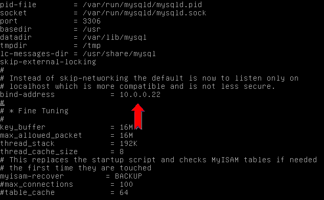
24) Salvar y cerrar el fichero my.cnf, y reiniciar el servidor MySQL ejecutando /etc/init.d/mysql restart
25) Si repetimos el comando netstat -anp | more
,vemos que el servidor ahora sí escucha en el puerto 3306 para
la dirección IP 10.0.0.22, y por tanto puede ser accedido
remotamente.
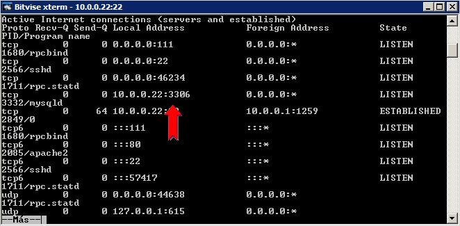
Ya tenemos en debiansql la
réplica de las bases de datos listas para usar. Ahora debemos
configurar los sistemas de comercio electrónico en debiantomato para que accedan a estas bases de datos, en lugar de a las copias locales del propio debiantomato.
26) Primero, vamos a parar y desactivar el servidor MySQL en debiantomato. Para ello hacemos login como usuario root en debiantomato y ejecutamos /etc/init.d/mysql stop (para detener el motor MySQL), y luego update-rc.d mysql disable (para que ya no vuelva a arrancar en posteriores reinicios de la máquina virtual).
27) Comprobamos que las bases
de datos de las tiendas virtuales están ahora mismo
inalcanzables, accediendo desde el Firefox de Windows 7 a http://10.0.0.21/tomatocart y a http://10.0.0.21/oscommerce/catalog ;en ambos casos obtendremos mensajes de error.
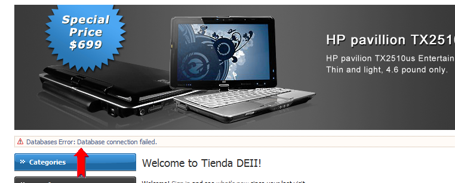
28) La configuración del servidor de base de datos a usar por TomatoCart se encuentra en el fichero /var/www/tomatocart/includes/configure.php. Editarlo y modificar la línea que contiene el parámetro DB_SERVER para que apunte a debiansql. Salvar y cerrar el fichero.
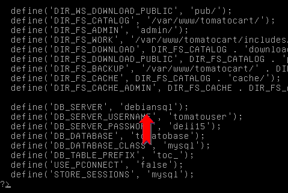
29) En el caso del servidor osCommerce hay que modificar también la línea del parámetro DB_SERVER, pero ahora en los ficheros /var/www/oscommerce/catalog/deiiadmin/includes/configure.php y /var/www/oscommerce/catalog/includes/configure.php
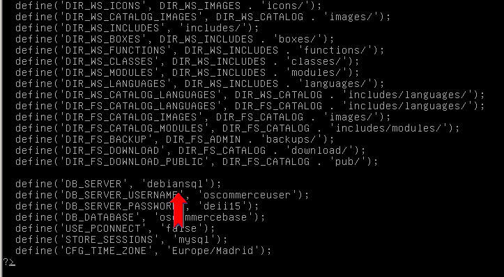
30) Una vez salvados los
ficheros de configuración, comprobamos que ahora las tiendas
virtuales vuelven a estar accesibles, conectándonos desde el
Firefox del Wiondows 7 a las mismas URLs accedidas en el punto 27 (o
refrescando las pestañas, si siguen todavía abiertas).
(NOTA: en el front-end de TomatoCart puede ser que los recuadros
desplegables de Categorías y de Fabricantes no muestren
correctamente sus valores; para solucionar ésto basta con entrar
en el interfaz de administración de TomatoCart y provocar una
actualización de los contenidos de estos recuadros - por
ejemplo, deseleccionando y volviendo a seleccionar cualquiera de sus
valores).
Como vemos, desde el punto de vista del usuario las dos tiendas
virtuales siguen teniendo el mismo aspecto y funcionalidad que cuando
estaban en un sólo servidor, pero desde el punto de vista de
gestión y mantenimiento la configuración es ahora mucho
más adecuada para manejar el posible crecimiento y
expansión de ambas webs de comercio electrónico.
Con esto, termina este Ejercicio. En el siguiente Ejercicio,
aprenderemos a usar Jmeter para generar test de carga sencillos sobre
el servidor debiantomato.